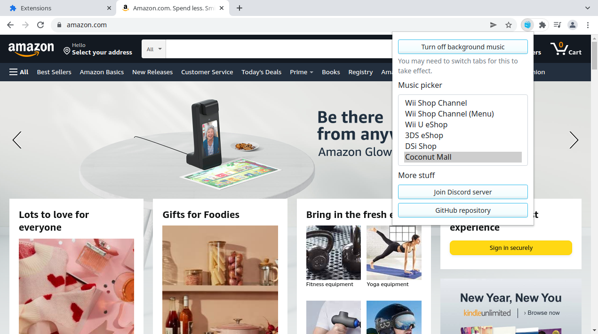

I released a browser extension for Chrome and Firefox in 2020 called Wii Shop Channel Music, which plays the iconic Wii Shop Channel theme in the background when you visit a shopping website. It went somewhat viral a few times (most recently on a popular AskReddit thread), so I’ve received plenty of feature requests and additional sites to add.
Wii Shop Channel Music v2.0 is now rolling out on Firefox, and it’s in the review process for Chrome. The main new addition is that there’s now a settings panel, accessible from the extension’s icon in the toolbar.

The settings panel gives you access to the other new features: a button for turning the music on or off (in case you need a break but don’t want to uninstall), and more options for background music. The extension now includes the Wii U eShop theme, the Wii Shop Channel music from the Wii home screen (which played before you clicked Start), the DSi eShop theme, the 3DS eShop theme, and the Coconut Mall theme from Mario Kart.
There are still some suggested features that aren’t implemented yet, but I figured I might as well release what I’ve already finished. This update also includes many more websites that are properly detected as shopping websites, thanks to contributions and suggestions from others.
You can download Wii Shop Channel Music from the links below, but as mentioned previously, Google hasn’t approved the v2.0 update yet. The code for the extension is also available on GitHub.